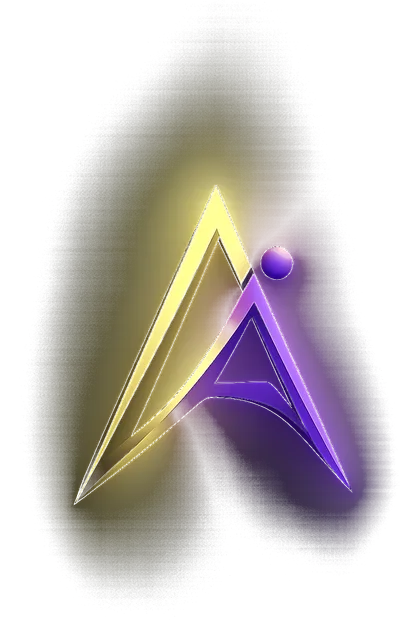

Mapeamento de tarefas
Identificamos o que vale automatizar e o que é melhor continuar manual.

PropostaAutomação com IA
Integrações e robôs que eliminam tarefas repetitivas, com inteligência artificial usada onde ela realmente gera retorno.
Identificamos o que vale automatizar e o que é melhor continuar manual.
Dados fluindo entre planilhas, ERP, loja virtual e outros serviços.
Respostas automáticas e triagem de mensagens, com encaminhamento para uma pessoa quando precisa.
Resumo, classificação e extração de informações de textos e documentos, quando fizer sentido.
Avisos e resumos enviados na hora certa, sem alguém montar à mão.
Monitoramento e ajustes depois de entregue, porque automações precisam de cuidado.
Entendemos o seu negócio e transformamos as ideias em um escopo claro.
Protótipos navegáveis que você aprova antes de construirmos.
Entregas parciais a cada etapa, com código testado.
Go-live planejado, com performance e SEO conferidos.
Suporte e melhorias para o produto crescer com o seu negócio.
Escopo, prazo e valor são definidos na proposta, depois do diagnóstico gratuito, e ficam registrados em contrato. Ver o processo completo.
Nem sempre. Muita tarefa repetitiva se resolve com integração e regras simples, que é mais barato e previsível. Usamos IA só onde ela traz ganho claro, e dizemos quando não é o caso.
Desenhamos os fluxos com pontos de revisão humana nas decisões sensíveis e com registro do que foi feito. Começamos por processos de baixo risco e ampliamos com confiança.
Definimos na descoberta quais dados entram na automação e como são tratados, respeitando a LGPD. As condições ficam registradas em contrato.
Preço, prazo, suporte e pagamento são combinados na proposta de cada projeto. Mais respostas no FAQ geral.
Comece pelo diagnóstico gratuito de 30 minutos. Sem compromisso, e a resposta vem em até 24h úteis.